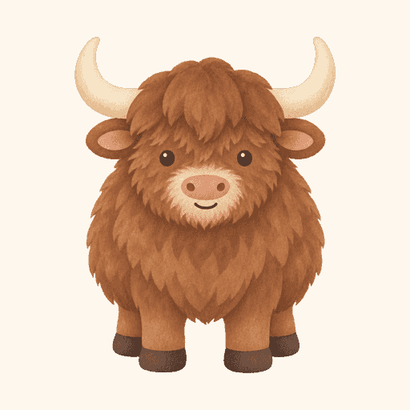

Recipe Box
42 visits
Pages
- /recipes/42
Came from
- example.com8
Countries
- US42
 yaks.app
yaks.app
This page renders the shared tokens and components used across yaks.app. Use it to check a change against the rest of the site.
No build step of ours, four declared layers — tokens, base,
components, and sections. Later layers take precedence. Every
part below is one of the @yaks/ui kit's, in its
linen theme and drawn by its
pencil skin: the deploy
composes them as _ui.css
(sheet-assets.ts names the parts the pages wear).
site.css adds the face and what
only these pages paint. The management pages'
pages.css and the site's
style.css load both and lay out
their pages. Follow these rules when adding a page or component:
var(--text), never
#523828. The theme gives each
role a light and a dark paint; a colour written down follows
neither.
.Chip-quiet sets
--chip-fill instead of
repeating the component's padding and border.
When adding a component, add a working example here so this guide remains complete.
--measure. Use
--wide-measure only when a
grid, preview, or comparison needs the extra width.
Every page yaks.app draws, the dashboard's tabs and the site's own pages alike, is built from the same few parts in the same way. A person who learns one page has learned them all.
.Card. Cards stack one gap
apart, and a run of cards that belong together sits under a
.Group heading.
--small or the body size; and
what describes it (a hint, a status, a count, a date) at
--fine in
--muted. The mono face is
only for what a person copies or types.
.Rows in a card, hairlines
between them, each row's actions at its right.
.Form_Field) is its label,
its control and its hint, on one left edge and at most 34rem
wide, in a form or alone in a card. One field and its button
share a line
(.Form_Line); a longer form
ends with its button. What only a few people change folds under
Advanced options (.More)
with a sensible default already in place.
yaks.app wears linen, a theme of
the @yaks/ui kit: every colour a part reads is one of its roles, and
each role is a light and a dark paint. Values reflect the selected
theme.
--bg
--surface
--card
--border
--border2
--text
--muted
--dim
--accent
--link
--heading
--info
--active
--positive
--negative
--caution
--special
What only yaks.app's pages paint, and no theme names:
the person's bubble, the assistant's, an embedded app's ground and
a field's well. They are declared in
site.css, from the theme's roles
where they can be.
--mine
--theirs
--preview
--well
--font
--mono
--size — body text.
--lead — introductory text.
--small — captions, footers, and what a card says.
--fine — what describes a thing: a hint, a status, a count, a date.
Spacing tokens derive from --gap.
--quarter-gap
--half-gap
--gap
--wide-gap
--measure — the maximum width for
prose: in this context.
--wide-measure — the maximum width
for grids and previews: .
--side and
--aside add a sidebar before the
reading column and a gutter after it, and
--rhythm says how far apart the
page's sections sit. A page kind sets all four on its
body, and the header, the page
and the footer are framed by the sum.
Shape is pencil and paper: the colour and weight of a drawn line, how round its corners are, and how far a button sits off its hatch.
--graphite
--stroke
--radius
--lift
Each reusable component appears beside its class name. Dashed borders mark examples and are not part of the component.
.Title · .Title-hero · .Title-page
Build an app by asking Claude
The title of a page
The heading of one section
.Note · .Note-lead · .Note-small
Introductory copy below a page title.
Supporting copy at the page's body size.
A caption, a footnote, a date.
.Chips · .Chip · .Chip-quiet · .Chip-code
Linked chips have an underlined label and are drawn in pencil. Plain chips label content.
yourname.yaks.app/recipes
https://yaks.app/mcp
The kit's marks, as pencil draws them: .Chip-0 … .Chip-5 · .Chip-ghost · .Dot and its shapes and tones · .State in every tone
doc task filed claim created updated + memory
info active positive negative caution accent special
.Tabs with buttons · .Tabs_Tab-on · .Tabs_Tab-hover · .Tabs_Badge · .SideNav_Link-hover · .Field-bare
.Address · .Address_Name
Your own yourname.yaks.app
.Button · .Button-go · .Button-quiet · .Button-danger · .Button-add
The one to press is the accent; a plain button is paper; a quiet one steps back beside another and reads as a link. One that destroys says so in the negative, and one that adds what is not there yet is dashed.
.Button · .Field · select.Field
Fields and select menus are pencilled wells; focus draws the edge in the accent, and a select keeps its native arrow.
Buttons and single-line fields share
--control-height (2.25rem).
A textarea grows with what is typed in it. Adjust horizontal
padding with --control-pad-inline.
Press “Pin app” to toggle its state. Use a native button for an
action, an anchor for navigation, and
aria-pressed for a toggle.
.Check · checkbox · radio
Native inputs keep their keyboard controls and form values. The whole label is clickable.
.Voices · .Voices_Row
Rows to pick one from, each with something to try beside it; a long list scrolls in place.
.Icon
Connect your agent
Use the shared Lucide sprite beside a text label. Hide decorative icons from screen readers; give a button without text an accessible name.
.SideNav · .SideNav_Link · .SideNav_Link-on · .SideNav_Rule
The selected tab joins this page.
Mark the current page on its link. Sidebar tabs attach to the page; narrow layouts use a compact row. Keyboard focus keeps its own outline.
.Tabs · .Tabs_Legend · .Tabs_Item · .Tabs_Tab · .Tabs_Panel
Select a tab, or use the arrow keys while it has focus. Native radios share a name; each label points to its input's unique ID. The selected tab and its panel form one surface without script: the panel's top line runs under every other tab and opens under the selected one. The first and last tabs align with the panel edges.
.Chat · .Chat_Who · .Chat_Who-you · .Chat_Bubble · .Chat_Bubble-you · .Chat_Bubble-them
Could you make me a recipe box?
Sure, give me a minute.
A caption at the foot of the exchange.
.Said
Use <q> for words a person
says to an assistant. The element remains a quotation without CSS,
and the background continues across line breaks:
invite ana@example.com to the recipe box, say it's
for Saturday, and put the newest recipes first
.
Short ones sit in the line the same way:
take Ana out.
.Window · .Window_Bar · .Window_Body · .Window_Heading · .Window_List · .Window_On · .Window_Body-frame · .Window_Frame
Our recipe box
A note on Tuesday soup: “Taste for salt twice.”
.Card
How to connect
Related content grouped in a card.
Flat, drawn in pencil. What it holds stacks .75rem apart.
.Card_Head · .Card_Mark · .Card_Title · .State · .State-positive · .State-negative · .Card_Actions · .Button-quiet · .Card_Sub · .Body

Forecasts for any place on Earth.
Its key is only ever sent to
api.weather.test.
Events from your own calendar.
Sign in at calendar.test, open
Settings, and allow yaks.app.
The head names the card, says how it stands and holds what acts on the whole of it, at the right. Its controls are a size down.
.Rows · .Rows_Item · .Rows_Main · .Rows_Name · .Rows_Meta · .Rows_Actions
Like things in a card: the name, one line describing it, and what acts on it at the right. The rows run to the card's edges.
.Form · .Form_Field · .Form_Label · .Form_Hint · .Form_Line · .Form_Actions · .At · .At_End · .More · .More_Body
Label over control over hint, one left edge, one width. One field and its button share a line; a longer form ends with its button. What few people change folds under Advanced options, with its default already in place.
.Drop · .Drop_Zone · .Drop_File · .Drop_Say · .Drop_Choose · .Drop_Hint · .Drop_Chosen · .Drop_Item · .Drop_Picture · .Drop_Name · .Drop_Size · .Drop_Zone-over
Every file input is a drop zone. Press it, or Enter or Space on it, to choose; on a phone that opens the phone's picker. Files dragged over light it. What is chosen lists under it with its size, a picture where it is one, and Remove.
.Drop-gather · .Drop-over · .Drop_Kind · .Drop_Item-unread · .Drop_Note · .Drop_Said
yak.webp38 KBscan.tiff is larger than 16 MB, so it was left out.
A gathering part, a chat app's message box, takes a drop or a paste anywhere on it and adds each choice to what it holds: pictures as themselves, other files as their kind and name, a kind it can't read said so, and what was too large said under it.
.Group
A card that belongs under it.
.Copy · .Copy_Text · .Copy_Go · .Notice · .Notice-negative
Any yaks.app ideas you think I'd like?Saved. Your apps live at dana.yaks.app.
That name is taken.
.Loading · .Loading_Mark


.Empty
Deleted apps wait here for 30 days.
.Chart · .Chart-line · .Chart-bars · .Chart_Plot · .Chart_Line · .Chart_End · .Chart_Bar · .Chart_Tip
1,204 requests
3 Sept: 60 requests
.Report · .Report_Total · .Report_Unit · .Report_Plot · .Report_Span · .Report_Tops · .Report_Column · .Report_List
42 visits
A report is a card: its head names what it counts and gives the total where actions would sit, then a bar a day and the short lists. Keep the date range in the page heading when several reports share it.
.Yak · .Yak-small · .Yak-big
One transparent drawing, in
yak.webp, serves both sizes.
Square exports provide the favicon, home-screen icon, and future
app-icon sizes.
.Prose · .Prose_Head · .Prose_When
Last updated 3 September 2026
Prose styles unclassed paragraphs, lists, links,
code, and addresses. Elements with a component
class keep their component styles.
The sections layer contains layout used in one place. Do not reuse a section class as a general component.
body
says how wide it all is, by re-pointing
--measure,
--side and
--aside, and how far apart its
sections sit, with --rhythm.
Pages that contain grids or previews may use
--wide-measure.
body.
.Home.